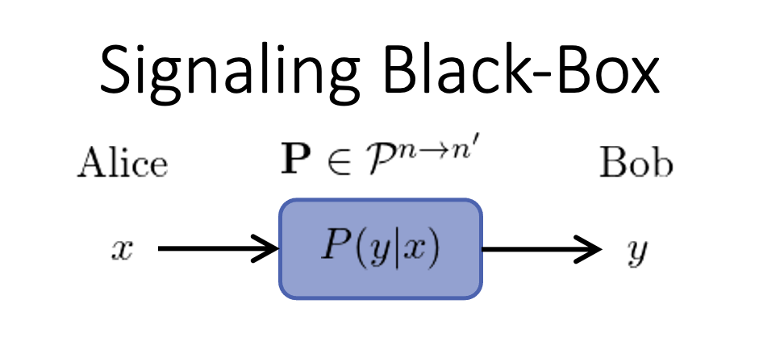
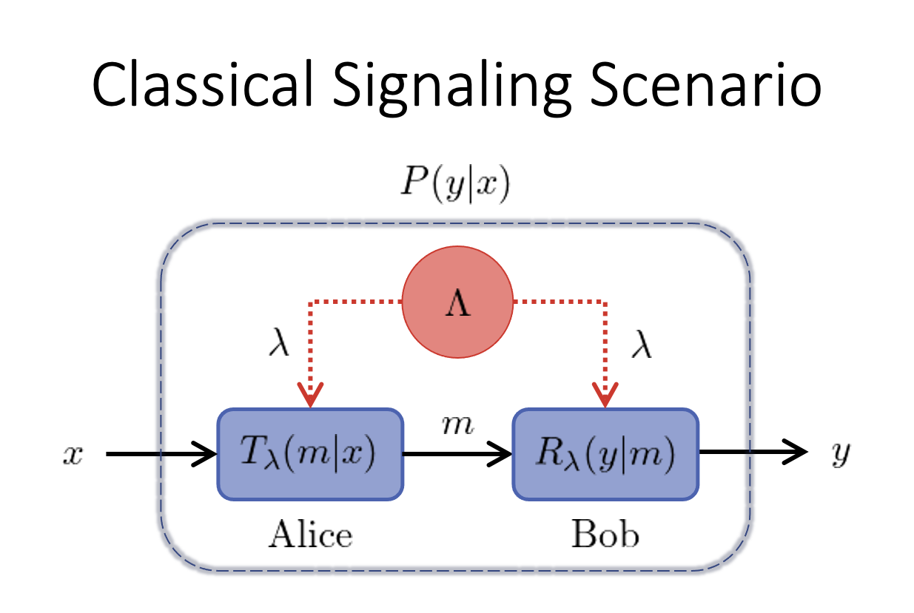
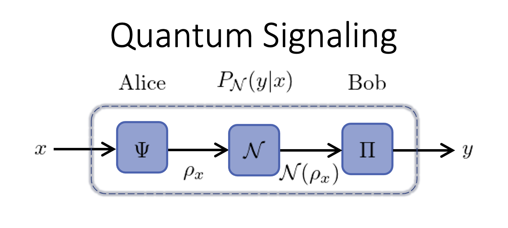

Signaling Correlations
The transmission of classical information from Alice to Bob can be described in the computational framework of BellScenario.jl. At the highest-level, a communication channel is a black-box connecting Alice to Bob.

The black-box has a classical input $x\in \mathcal{X}=[n]:=\{1,2,\cdots,n\}$ and classical output $y\in\mathcal{Y}=[n']$. Without making assumptions about the physical signals used to communicate, the behavior of the communication channel is characterized by its conditional probabilities $P(y|x)$ referred to as signaling correlations. These input-output correlations can be organized into a $n' \times n$ column stochastic matrix $\mathbf{P}$ which is represented using children of the BellScenario.AbstractStrategy type. The set of all attainable communication channels is denoted $\mathcal{P}^{n \to n'}$.
To evaluate the performance of classical and quantum signaling, the amount communication must be taken into consideration. This communication process is described by the BellScenario.LocalSignaling scenario which specifies the number of inputs X, outputs Y and communication d.
using BellScenario
X = 3 # num inputs
Y = 3 # num outputs
d = 2 # d-dit or d-qudit
scenario = LocalSignaling(X, Y, d)LocalSignaling(3, 3, 2)
Note that the LocalSignaling scenario type only specifies the black-box configuration.
Classical Channels
When classical signals are used to communicate, the amount of communication is specified as a dit, the number of distinct messages, $d$, that can be transmitted. A dit is the generalization of a bit ($d=2$) where $n$-bits of classical communication is equivalent to one dit with$d = 2^{n-1}$. Furthermore, shared randomness can be shared between Alice and Bob (transmitter and receiver).

As depicted in the figure, Alice sends a classical message $m\in[d]$ to Bob. The content of $m$ is determined by the input $x\in[n]$ and the encoding strategy of the transmitter $T_{\lambda}(m|x)$. Likewise, Bob's output $y\in[n']$ is derived from $m$ using a decoding strategy of the receiver $R_{\lambda}(y|m)$. The transmitter and receiver strategies are simply stochastic maps $\mathbf{T}_{\lambda} \in \mathcal{P}^{n \to d}$ and $\mathbf{R}_{\lambda} \in \mathcal{P}^{d \to n}$ respectively. The sample space of the shared randomness is denoted $\Lambda$ where the shared random variable $\lambda \in \Lambda$ is weighted by the probability mmass function $q(\lambda)$ such that $\sum_{\lambda\in\Lambda} q(\lambda) = 1$. Alice and Bob both have access to $\lambda$ and therefore can condition their encoding and decoding strategies on this value.
The classical signaling correlations produced in a LocalSignaling scenario are constructed by
\[P(y|x) = \sum_{\lambda\in\Lambda}q(\lambda) \sum_{m\in[d]}R_\lambda(y|m)T_\lambda(m|x).\]
The complete set of classical signaling correlations are denoted $\mathcal{C}_d^{n \to n'}$. Any classical local signaling strategy $\mathbf{P}$ satisfies $\mathbf{P}\in\mathcal{C}_d^{n \to n'}\subset \mathcal{P}^{n \to n'}$. The set $\mathcal{C}_d^{n \to n'}$ forms a convex polytope regarded as the signaling polytope. More details on the structure of the signaling polytope are found in the Signaling Polytope: Overview section.
Code Example: Classical Signaling without Shared Randomness
using BellScenario
X = 3 # num inputs
Y = 3 # num outputs
d = 2 # d-dit
scenario = LocalSignaling(X, Y, d)
T = Strategy([1 0 1;0 1 0]) # transmitter strategy
R = Strategy([0 0;0 1;1 0]) # receiver strategy
S = *(R, T, scenario) # `Strategy` matrix multiplication : S = R*T3×3 Strategy: 0.0 0.0 0.0 0.0 1.0 0.0 1.0 0.0 1.0
Code Example: Classical Signaling with Shared Randomness
using BellScenario
X = 3 # num inputs
Y = 3 # num outputs
d = 2 # d-dit
scenario = LocalSignaling(X, Y, d)
# λ = 1 strategies
T1 = Strategy([1 0 1;0 1 0]) # transmitter strategy
R1 = Strategy([0 0;0 1;1 0]) # receiver strategy
# λ = 2 strategies
T2 = Strategy([0 0.5 1;1 0.5 0]) # transmitter strategy
R2 = Strategy([1 0;0 1;0 0]) # receiver strategy
Λ = [0.5, 0.5] # shared random distribution
# `Strategy` matrix multiplication : S = R*T
S1 = *(R1, T1, scenario)
S2 = *(R2, T2, scenario)
# Convex combination of `S1` and `S2`
Strategy(sum( Λ .* [S1, S2] ), scenario)3×3 Strategy: 0.0 0.25 0.5 0.5 0.75 0.0 0.5 0.0 0.5
Quantum Channels
When quantum signals are used to communicate, Alice uses a classical quantum encoder $\Psi$ to transform input $x$ into a quantum state $\rho_x$. Bob decodes the output $y$ using a positive operator-valued measure (POVM) $\Pi = \{\Pi_y\}_{y\in\mathcal{Y}}$. The amount of quantum communication is measured by the Hilbert space dimension of $\rho_x$. During transmission, quantum states are subjected to processing and noise inherent to the signaling system. These effects are modeled by a quantum channel $\mathcal{N}$ which performs a completely positive trace-preserving (CPTP) map.

The signaling correlations of a general quantum channel are then expressed
\[P_{\mathcal{N}}(y|x) = \text{Tr}[\Pi_y \mathcal{N}(\rho_x)],\]
While for an ideal quantum channel, the signaling correlations are constructed as
\[P(y|x) = \text{Tr}[\Pi_y \rho_x].\]
The set of quantum strategies are denoted $\mathcal{Q}_{\mathcal{N}}^{n \to n'}$ where $\mathbf{P}_{\mathcal{N}} \in\mathcal{Q}_{\mathcal{N}}^{n \to n'}\subset \mathcal{P}^{n \to n'}$.
To compute quantum signaling correlations, BellScenario.jl provides a quantum_strategy method. As input this method requires states and POVMs to be represented by QBase.States.AbstractDensityMatrix and QBase.Obserbables.AbstractPOVM defined in the QBase.jl package
Code Example: Signaling Over Quantum Channel
using BellScenario
using QBase
X = 3 # num inputs
Y = 3 # num outputs
d = 2 # d-dit
scenario = LocalSignaling(X, Y, d)
Ψ = States.trine_qubits # trine qubit states
Π = Observables.trine_qubit_povm # trine qubit povm
println("Π = ", Π, "\n")
# quantum signaling correlations for an ideal channel
P = quantum_strategy(Π, Ψ, scenario)
# quantum signaling correlations for a depolarizing channel
μ = 0.5 # depolarization amount 0 ≤ μ ≤ 1
P_N = quantum_strategy(Π, Channels.depolarizing.(Ψ, μ), scenario)Ψ = QBase.States.Qubit[[1.0 + 0.0im 0.0 + 0.0im; 0.0 + 0.0im 0.0 + 0.0im], [0.25 + 0.0im 0.4330127018922193 + 0.0im; 0.4330127018922193 + 0.0im 0.7499999999999999 + 0.0im], [0.25 + 0.0im -0.4330127018922193 - 0.0im; -0.4330127018922193 + 0.0im 0.7499999999999999 + 0.0im]]
Π = Array{Complex{Float64},2}[[0.6666666666666666 + 0.0im 0.0 + 0.0im; 0.0 + 0.0im 0.0 + 0.0im], [0.16666666666666666 + 0.0im 0.28867513459481287 + 0.0im; 0.28867513459481287 + 0.0im 0.4999999999999999 + 0.0im], [0.16666666666666666 + 0.0im -0.28867513459481287 - 0.0im; -0.28867513459481287 + 0.0im 0.4999999999999999 + 0.0im]]
P = [0.6666666666666666 0.16666666666666666 0.16666666666666666; 0.16666666666666666 0.6666666666666665 0.16666666666666657; 0.16666666666666666 0.16666666666666657 0.6666666666666665]
P_N = [0.5 0.25 0.25; 0.24999999999999997 0.49999999999999994 0.24999999999999994; 0.24999999999999997 0.24999999999999994 0.49999999999999994]